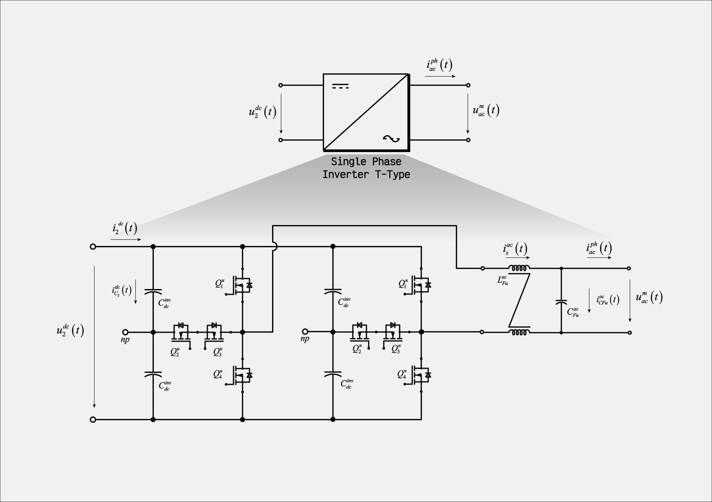
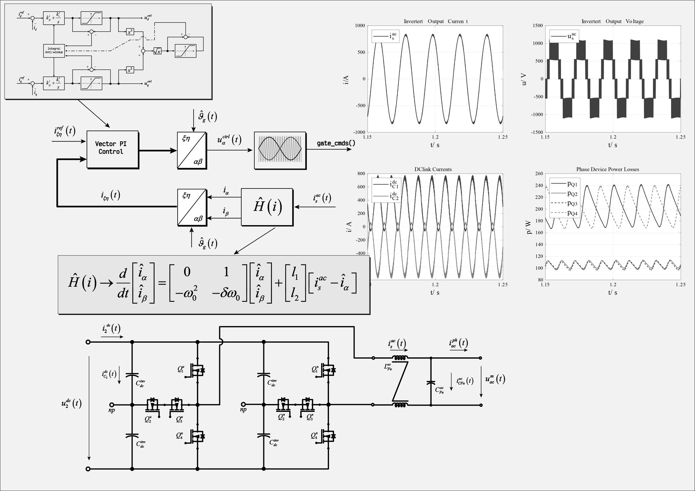

Single-phase inverter and active front end
Single-phase converters used as building blocks: the three-level T-type inverter of the SST modules and a single-phase AFE with vector PI control in the stationary frame and a first-harmonic-tracker observer.

What it is
Single-phase converters appear twice in the models on this site: as the AC output stage of each solid-state-transformer module, and as a grid-tied active front end (AFE). Both are simulated with the same Simscape device models and with control code written in C.
The T-type inverter gives three output levels with a single DC link and a clamped mid-point, which halves the voltage step seen by the output filter compared with a two-level bridge.
Control of the single-phase AFE
A single-phase current has no natural quadrature component, so the vector control needs an observer to build it. Here a first-harmonic-tracker (FHT) observer, a small resonant state observer, produces the in-phase and quadrature components of the measured current; a vector PI controller in the stationary frame closes the loop and the modulator uses unipolar voltage switching. A single-phase PLL provides the grid angle.
The same observer structure is used for the single-phase grid synchronisation described in the FHT dq-PLL project.
Figures

